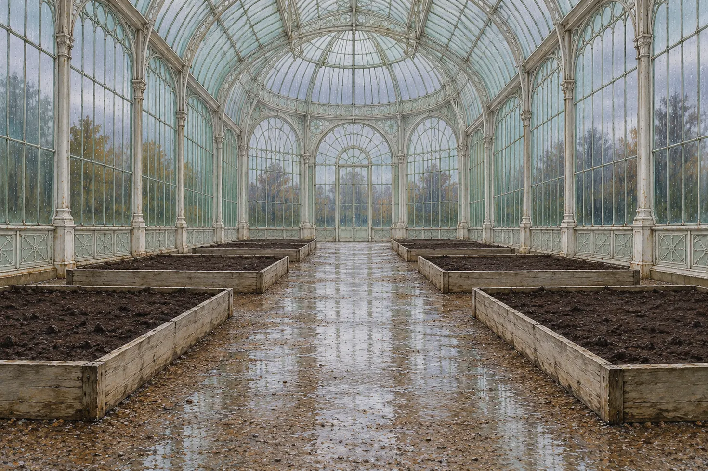

The trellis shapes the vine more than the seed does.
8 verdicts, one per bed. The first: the harness outweighs the model.

8 verdicts, one per bed. The first: the harness outweighs the model.

↓ ↑ walk the path · ← → or 1–8 beds · Enter face a bed · Esc back to the entrance · just type to search · the pointer carries the sun (left alone, it drifts)